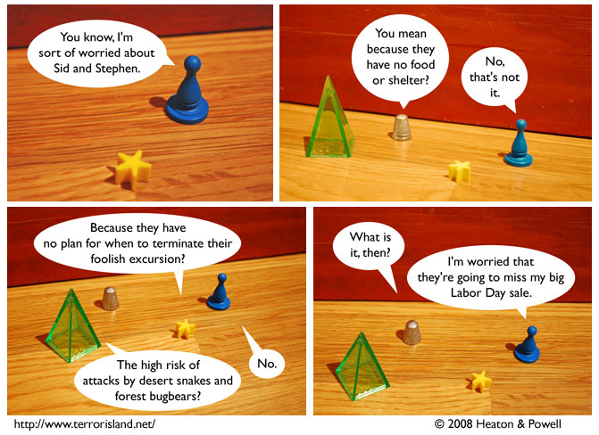

Strip #345
— Wednesday, August 27, 2008
[slide whistle noise]
Notes, Thoughts, &c.
Ben’s Notes
Lewis, aren’t bugbears from Europe? Why would they be around Geography City?
Lewis’s Notes
Geography City was originally founded by the Spanish, who inadvertently introduced the bugbear to California by not checking the undersides of their ships carefully enough.
Back then, the city was known as La Ciudad de Geografía.
I wrote Lewis’s comments today. -Ben